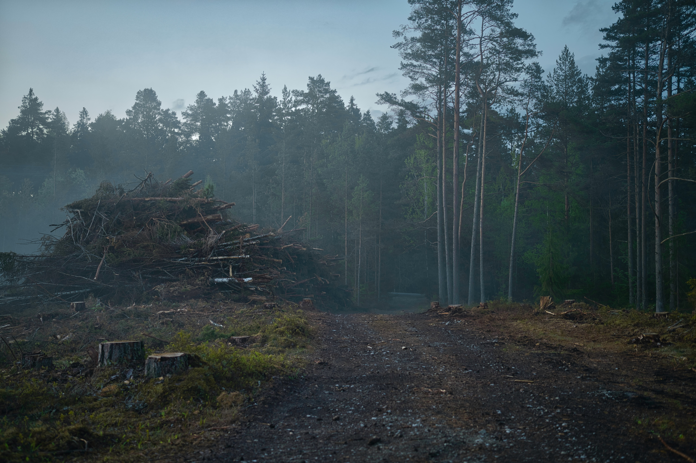
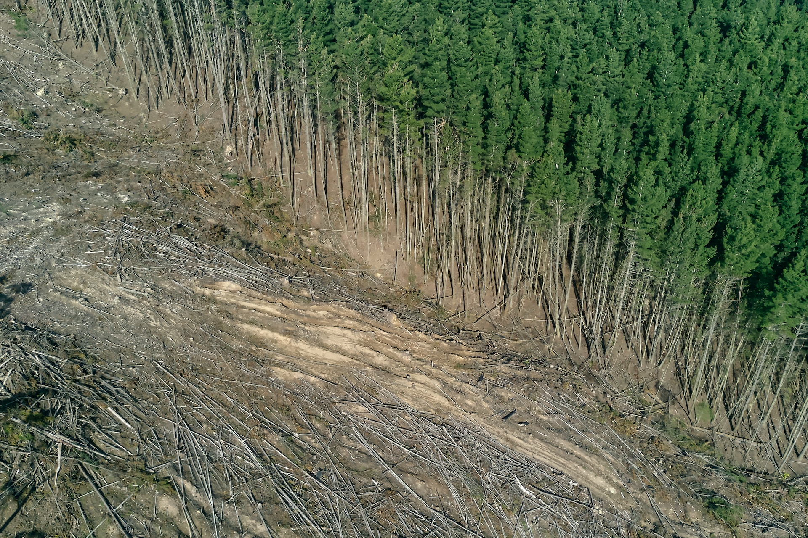

Deforestation is the purposeful clearing of forested land. Throughout history and into modern times, forests have been razed to make space for agriculture and animal grazing, and to obtain wood for fuel, manufacturing, and construction. Deforestation has greatly altered landscapes around the world.
Deforestation leads to an increased risk of floods due to several factors. Firstly, when trees are cleared, the protective canopy that intercepts rainwater is lost, leading to more direct rainfall on the ground. Secondly, without trees to absorb water through their roots, there is an increase in surface runoff, causing water to flow more rapidly into rivers and streams. Thirdly, the loss of tree roots destabilizes the soil, making it more prone to erosion, which can contribute to sediment buildup in waterways, reducing their capacity and increasing the likelihood of flooding. Fourthly, deforestation disrupts the natural water cycle, diminishing the ability of ecosystems to regulate water flow and maintain a balance between dry and wet periods. Lastly, the removal of natural flood barriers, such as forests, removes the buffering effect against floodwaters, allowing them to travel more swiftly and cause greater damage downstream.
The negative effects of deforestation include the loss of biodiversity as many species lose their habitats. It also contributes to climate change by releasing stored carbon dioxide back into the atmosphere. Additionally, deforestation leads to soil degradation and erosion, impacting the fertility and productivity of land, making it less suitable for agriculture and other forms of land use.
While deforestation is primarily associated with negative impacts, there are some situations where it can have positive effects, albeit rare and specific. In some cases, controlled deforestation can be necessary for human activities like infrastructure development, urban expansion, or agriculture, which can contribute to economic growth and provide employment opportunities. Additionally, selective deforestation can help regenerate forests with more diverse and resilient tree species, enhancing ecosystem health and promoting sustainable land management practices. However, it's important to note that these potential positive effects must be carefully balanced with the need to minimize environmental damage and ensure long-term sustainability.